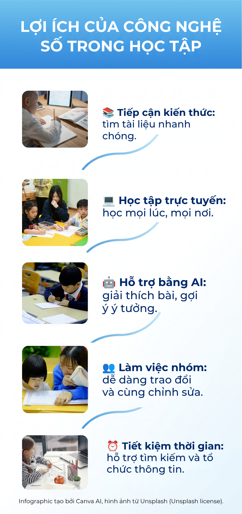

Học tập trong thời đại số
Lợi ích của công nghệ số trong học tập
Khám phá cách công nghệ giúp việc học trở nên linh hoạt, kết nối và dễ tiếp cận hơn.
Infographic

Học tập trong thời đại số
Khám phá cách công nghệ giúp việc học trở nên linh hoạt, kết nối và dễ tiếp cận hơn.
